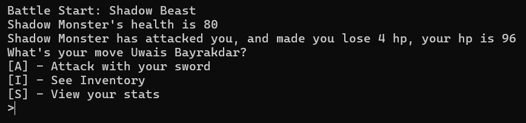
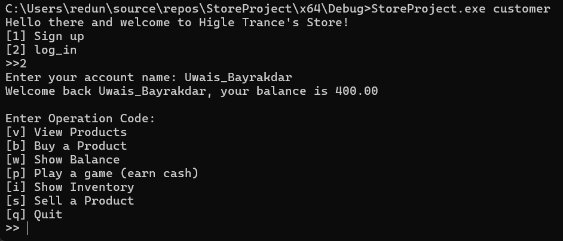
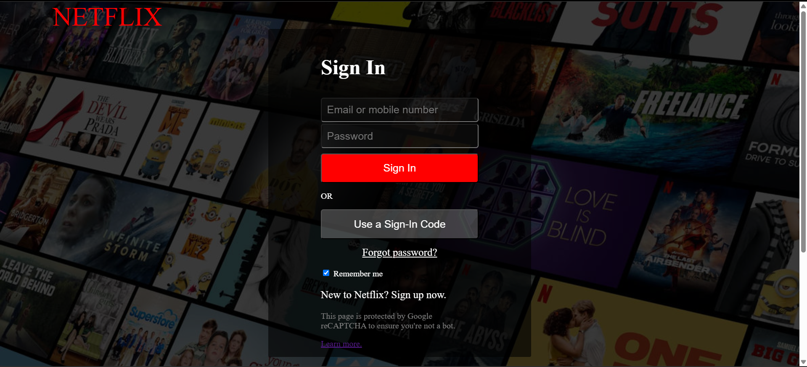
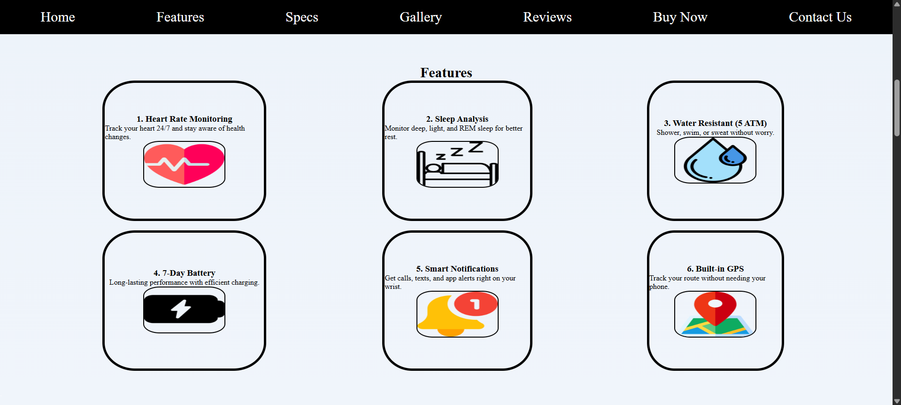
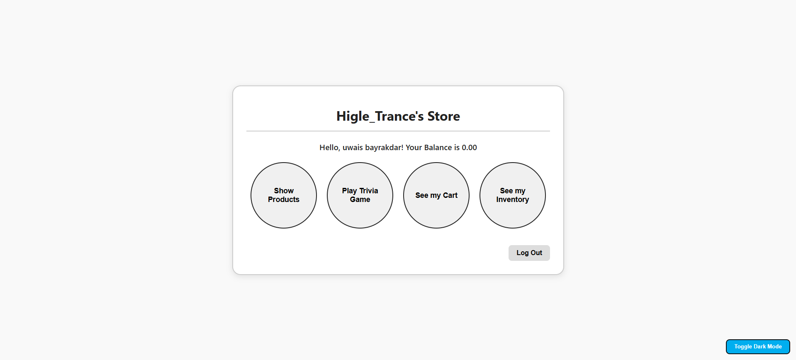
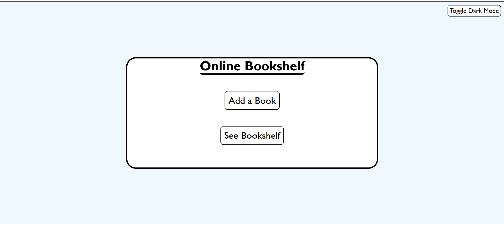
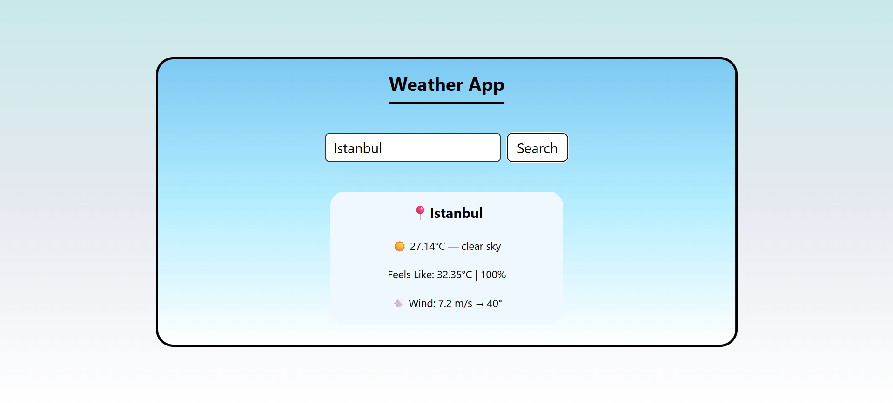

About Me
I'm Uwais Bayrakdar, a first-year university student passionate about technology and design. I started exploring programming through C and C++, and recently shifted my focus to front-end web development. I enjoy bringing ideas to life using HTML, CSS, and JavaScript. My goal is to build clean, responsive, and user-friendly websites while constantly improving my skills.
My Projects:
C LANGUAGE
First Project On C
This is my first Ever Big Project Done in my Coding Career, if you want to learn more about it, you can click on the project name and go to read me to read more.
Second Project On C
This is my Second Big Project Done Also on C language, if you want to learn more about it, you can click on the project name and go to read me to read more.
HTML & CSS
Netflix Log in Mimic Page (html & css)
This is my first ever somewhat big of a project in Web development, i tried to learn more html and css or revision them so i decided to challenge myself and mimic the netflix log in page, it definetly didn't turn out same, but as for a first try, i think it turned somewhat close to it
Kronox Smartwatches Website
I started small, i was thinking about only making a product landing page, but rather than mimicing i decided to try to make my own, and soon turned from 1 page to a website, while as of right now it does not have Javascript or Backend for saving, I think the style and build turned out to be nicely done for an beginner-intermediate coder, later in the future i will definetly work on this website, making it have backend and who knows, i might be able to make an actual smartwatch business if i had the chance.
JAVASCRIPT LANGUAGE
Second Project On C Web Version (Higle Trance's Store)
I really was happy with the project i made on C, but i didn't like that it lacked visuality, so i thought of rebuilding the project on website to make it have visual also, and i'm really happy that i did this project, it seriously is a fun project to build, and although i didn't do the css part (explained more on readme file on github), i feel like i did this somewhat solo.
Online Bookshelf Website
This is not like the big projects i have done (kronox, store simulation..etc.), but rather between a mini and big, it's a fun little book saver, if you ever want to save a book you liked reading, you can save the book's name, you give a rating from 1 to 5, and give a description if you want on what was fascinating about reading the book, pros cons, you get the idea.
Weather App
It's a simple Weather App, it can search almost anywhere, and it shows the weather condition, temperature, wind speed and direction, and humidity.
Future Goals
In the near future, I aim to master front-end technologies like React, and eventually learn backend development to become a full-stack developer. I also plan to work on real-world projects and contribute to open-source. My main goal is to land a front-end developer job during university so I can gain practical experience early and grow in the tech industry with a strong foundation.